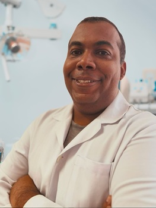

O melhor odonto do RJ todinhooooo! Eu amo de paixão! Tenho síndrome do Jaleco Branco e quem conhece sabe o pânico que da!
Dulcy Souza
Excelente profissional, gosto muito da forma como trata seus pacientes, xsempre simpático e explicativo, não troco por nada, recomendo.
Haroldo Bélo

Conheço o Carlos há anos, amigo de longa data e hoje minha familia inteira trata com ele, um profissional exemplar, minha filha o adora.
Nayra Garofle
Excelente atendimento! É o dentista da minha família porque confiamos no excelente trabalho do Dr. Carlos Wagner.
Sayonara Caetano
Carlos é realmente um grande profissional. Um cara muito especial. Saudades das nossas conversas. Grande abraço.
Edson Santos
Dr. Carlos Wagner atende meu filho a anos, era bem pequeno e foi o único que meu filho confiou e permitiu que cuidasse dele.